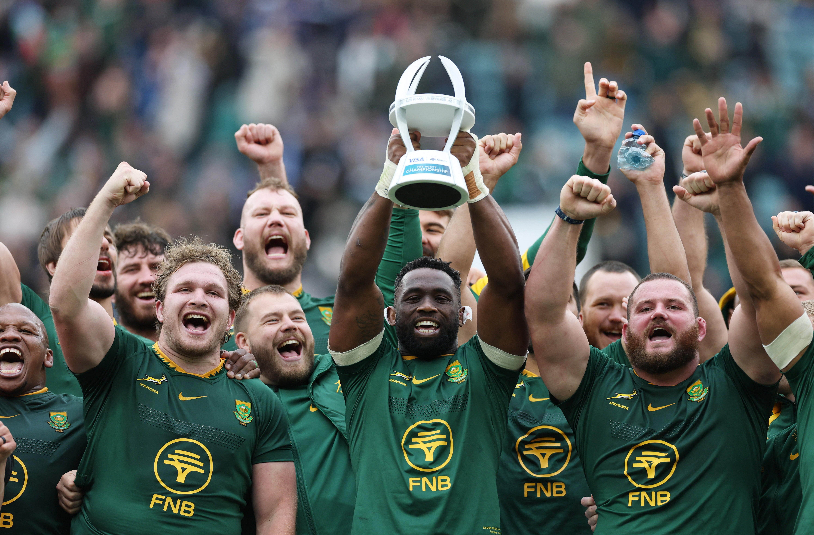
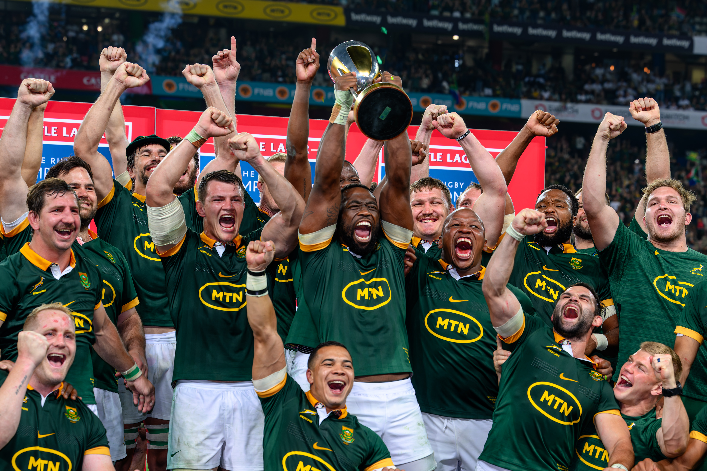
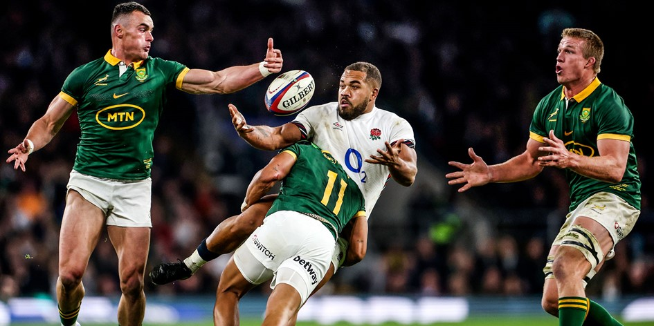

This is the introduction.
Welcome to the Springboks Fan Site
Introduction
Recent Highlights
2023 Rugby World Cup – Record 4th Title

On a wet and windy Parisian night, the Springboks exploded heat, light and joy to a nation of 62 million as they courageously claimed a second successive Webb Ellis Cup with a 12-11 victory (halftime 12-6) at a mesmerised Stade de France on Saturday night.
Source: sarugby.co.za
2024 Rugby Championship Title
The Boks entered the 2024 Castle Lager Outgoing Tour with confidence after clinching the Castle Lager Rugby Championship title against New Zealand, Australia and Argentina, and they continued to make the country proud by registering a 32-15 victory against Scotland in in Edinburgh, which they built on with a 29-20 win against England in London, before wrapping up the tour with an impressive 45-12 victory against Wales in Cardiff.
Source: sarugby.co.za
2024 November Tour – Clean Sweep
The “Class of 2024” recorded one of their best seasons yet after as the Springboks completed the Castle Lager Outgoing Tour with a clean sweep of victories over Scotland, England, and Wales – the first time since 2013 they have achieved this remarkable feat.
Source: sarugby.co.za
2025 World Rugby Dream Team

Six Springboks were named in the 2025 World Rugby Men's 15s Dream Team: Ox Nche, Malcolm Marx, Thomas du Toit, Pieter-Steph du Toit, Sacha Feinberg-Mngomezulu, and Cheslin Kolbe.
Source: springboks.rugby